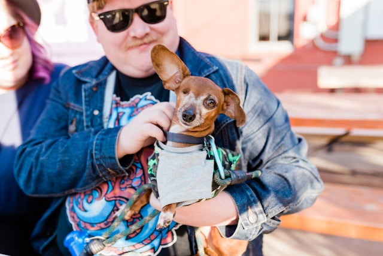
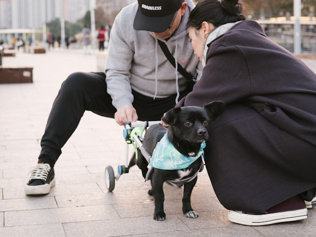
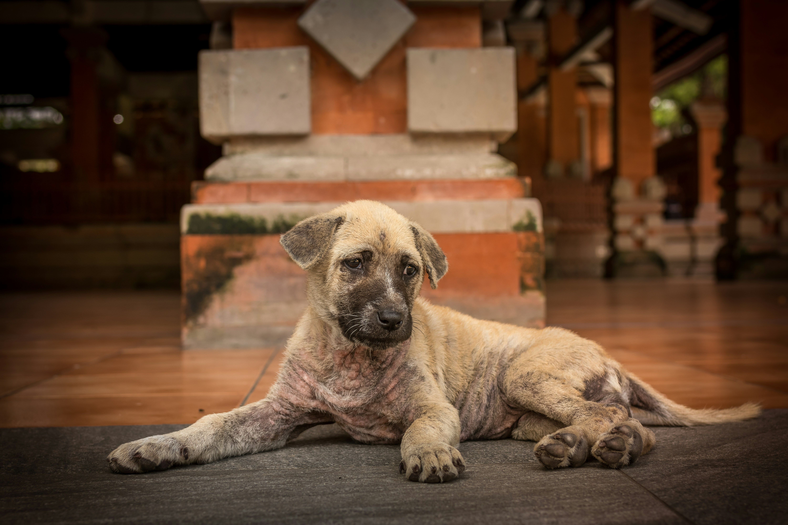

Els nostres vídeos i fotografies!

Rescat d'uns gossets abandonats.

Recinte del centre

Adopció d'un gos amb la pèrdua d'un ull.

Model rodetes per un gos amb paràlisi a les potes traseres.

Rescat del dia.

Esdeveniment solidari per recaptar fons.